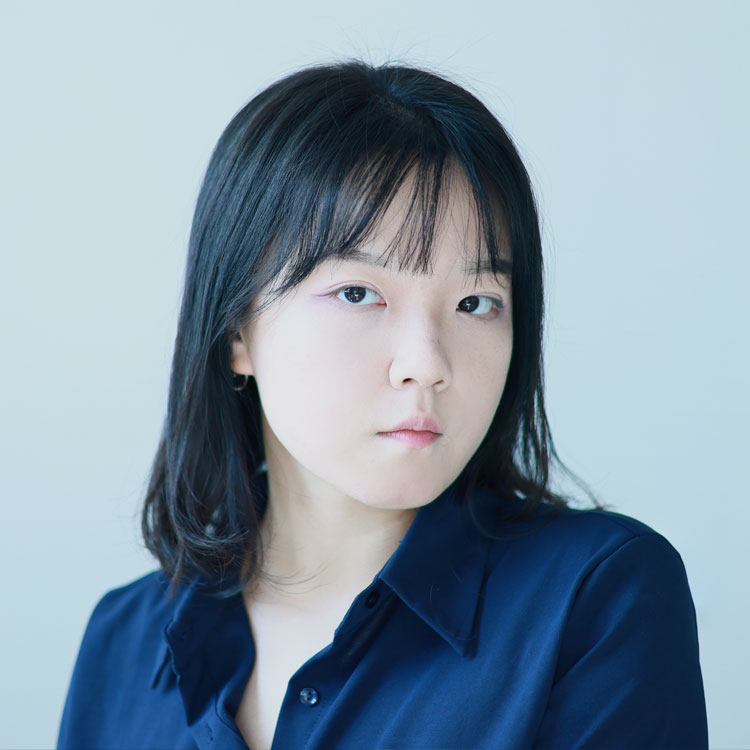
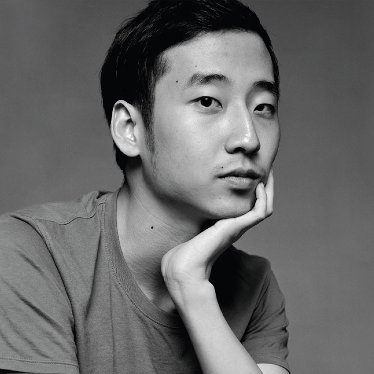
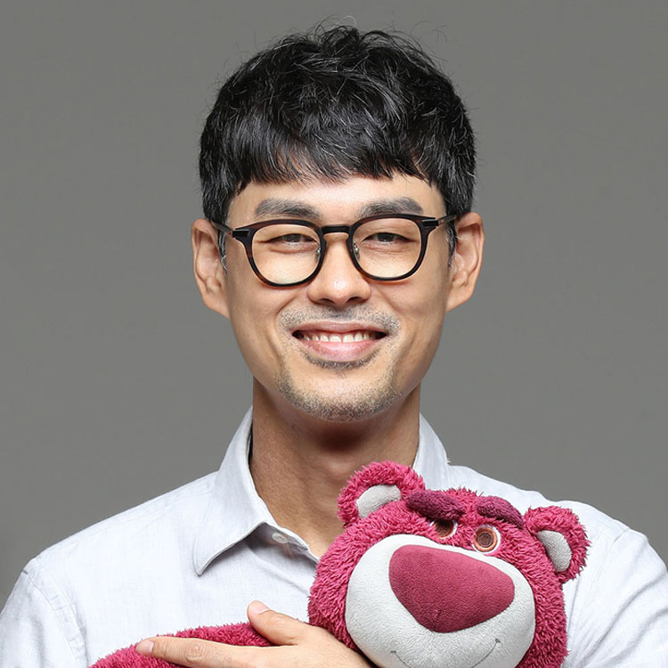
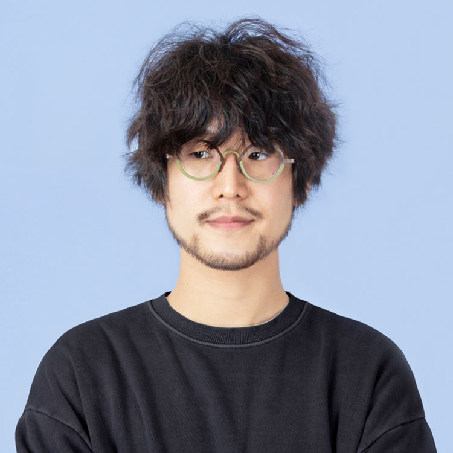
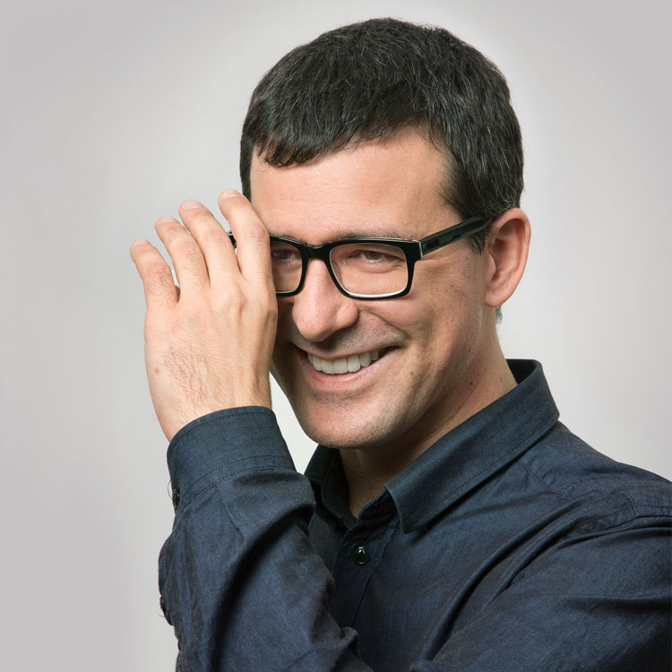

Hangeul type designs have continuously evolved since the 20th century. There has also been an increase in the types of discussions possible, such as new designs, techniques used for production, changes in the type market, and type design education. AG Type Conference (AGTC) is a meeting venue for holding professional discussions for those in the type design field, following current trends. The event, which is centered on working-level designers, will provide insights for the type industry, and create the type industry network.
Talks
Kim Jookyeong
AGTI
How Superblack Myeongjo was Designed: Starting from the Magazine Madang
AGTI

Kim Jookyeong graduated Seoul Women's University studying visual design, and currently working as a researcher and type designer at AG Typography Institute.
She designed 〈Hwayangyeonhwa (2017)〉 as a personal work, 〈AG Hunminjeongeum (2018)〉, 〈AG Superblack Myeongjo (2022)〉 for AG Typography Institute and 〈AmorePacific APHQ Hangul (2020)〉, Hyundai Department Store's 〈Happyness Sans Regular (2022)〉 for Brand identity types.
We will explain the creating process of Superblack Myeongjo, and the difficulties and obstacles that came from designing thick buri type.
〈AG Superblack Myeongjo〉 is a digital type that was designed based on Black Myeongjo that was drawn for Hongik University's typography textbook 『Character Design (Ahn Sangsoo, 1986)』, as well as the title for the cover and inner pages of the magazine 『Madang』. As the original drawing for the letters of the type is not available in the design form, we started from collecting the letters used for the magazine 『Madang』 and its title. We would like to share our experience in researching about each stroke, and making the strokes for "Superblack Myeongjo" thicker to fit modern times.
While introducing the process of finding the evidence and roots of the form, we would also like to explain the evidence regarding how to make decisions based on the findings. We will talk about the use of space and structure for thicker strokes for Min buri type and other buri types, and what we considered when creating the Superblack Myeongjo including how to use the strokes for complex letters with many strokes.
Lee Joohee
Noh.type
The story of developing 〈Climate Crisis Font: Hangeul〉 with regard to melting glaciers
Noh.type
 Lee Joohee graduated from Ewha Womens University with a major in Visual Communication Design, and was a part of her school's typography group "Flower" and Hangeul typography association "Hanul" for university students. As a previous type designer for "Noh.type," Lee Joohee took part in developing 〈Sori Pro (2021)〉 and 〈Climate Crisis Font: Hangeul (2022)〉.
Lee Joohee graduated from Ewha Womens University with a major in Visual Communication Design, and was a part of her school's typography group "Flower" and Hangeul typography association "Hanul" for university students. As a previous type designer for "Noh.type," Lee Joohee took part in developing 〈Sori Pro (2021)〉 and 〈Climate Crisis Font: Hangeul (2022)〉.
Type has served as a supplement to text with messages, adding texture and atmosphere. Unlike lettering, it is applied to unspecified text, and the number or size of characters is not set in stone. Therefore, rather than giving the font a formative trait, a type designer focuses on making the letters easy to read even in various situations.
〈Climate Crisis Font〉 is a type created to deliver the message about the seriousness of climate crisis and the melting of glaciers is boldly expressed in the type. Rather than focusing on readability, the font focuses on showing the disappearing glaciers. The type aims to share the seriousness of climate crisis just by looking at the font. When 〈Climate Crisis Font〉 was turned into Hangeul, the focus was on refining the image of the melting and disappearing glaciers rather than enhancing the readability. We will join designer Noh Eunyou to go through the unique type working process that focused on not the readability but the formative traits.
Park Mingyu
Type Designer
Letters learned and created
Type Designer

Park Mingyu studied biosciences in university. However, after finding his love for design, he transferred to School of Visual Arts and majored in graphic design. Afterwards, Mingyu Park went to Paju typography Institute to complete the official program for Deobaegot, and after leaving AG Typography Institute, he is currently working as an independent type designer. His published types include 〈AG Choijeongho Minburi Std. Regular〉 developed at AG, and 〈Min Gothic〉, 〈Chulae〉, and 〈ParkMingyu〉.
After experiencing graphic design for the first time in the United States, a country that uses the Roman alphabet, Mingyu Park continued his studies at PaTI that uses Hangeul in the hope of learning more about typography. Unlike the Roman alphabet that Mingyu Park was familiar with, using Hangeul type was quite awkward, and so this caused him to make his own Hangeul type. To make sure that no other type is considered, the type started from his own handwriting. After trial and error, 〈Min Gothic〉 came forth into the world.
Afterwards, Park Mingyu started to work again on 〈ParkMingyu〉 that became the start of 〈Min Gothic〉, improving upon existing issues. When 〈ParkMingyu〉 was almost finished, he found a Roman character type that seemed new from the book 『Theory of Type Design』. In hopes of making a Hangeul type that is also similar, he added curves to the foundation of 〈ParkMingyu〉 and edited the structure to make 〈ParkMingyu〉's family type, 〈Chulae〉.
With a passion to make better type, he looked for clues from old characters. After research, Park Mingyu found 〈typeface for national textbooks⟩, and based on this foundation, he is currently working on a new type.
Jeong Taeyeong
Sandoll
Terminology used by type designers
Sandoll
 From April 2022, Jeong Taeyeong has been conducting various types of research on Hangeul and type at "Sandoll Research Institute" from "Sandoll." Currently, he is engaged in the research regarding the Hangeul type words and standard font size.
From 2017 to 2021, Jeong Taeyeong worked as a type designer at the type studio "TYPESET COMPANY," where he developed custom types including 〈TSCHotplaceGothic〉, 〈TSCBlackstyle〉 and 〈TSCBonjourSans〉. He also worked on a number of custom type development projects for Brave Company, 〈MBC Banggwahu Seollem〉 and 〈DW Impactamin〉 for Daewoong Pharmaceutical. Jeong Taeyeong created the Hangeul lettering word chain game group "Seulggombal." He is the social media account manager for the group and has organized offline exhibitions.
From April 2022, Jeong Taeyeong has been conducting various types of research on Hangeul and type at "Sandoll Research Institute" from "Sandoll." Currently, he is engaged in the research regarding the Hangeul type words and standard font size.
From 2017 to 2021, Jeong Taeyeong worked as a type designer at the type studio "TYPESET COMPANY," where he developed custom types including 〈TSCHotplaceGothic〉, 〈TSCBlackstyle〉 and 〈TSCBonjourSans〉. He also worked on a number of custom type development projects for Brave Company, 〈MBC Banggwahu Seollem〉 and 〈DW Impactamin〉 for Daewoong Pharmaceutical. Jeong Taeyeong created the Hangeul lettering word chain game group "Seulggombal." He is the social media account manager for the group and has organized offline exhibitions.
At Sandoll Institute, we aim to provide a type terminology system that is easy to understand. When creating type, there may be difficulties that come from a lack of unified terminology.
The research on type terminology started to be popularized in 1982 with the study published by the "TypeGroup". The study provided a detailed explanation of not only the discussion process, but also the process of collecting ideas from the parties concerned, and created a foundation for future scholars to understand the purpose and background and fine tune the processes. Sandoll Institute also used this study as a reference and fine tuned the terminology system. By following the heart of Hangeul, we aimed to create a terminology system that is easy to understand and use, and to identify the differences between the purpose and results, we conducted three surveys to make modifications.
This lecture will be an introduction to our current research and an opportunity for us to conduct a fourth survey with the audience. The results of the fourth survey will be reviewed with the audience at the end of the lecture. The final results will be shared in a research paper. The lecture will be an excellent opportunity to investigate the current positions of type terminology for those who are interested in Hangeul and type.
Sim Wujin
Sandoll
Terminology used by type designers
Sandoll

Sim Wujin is a genuine and unpretentious type director and graphic designer who believes that people should enjoy text to make and control type, and seek design as a lifestyle. Sim Wujin was the director for 〈Sandoll Jeongche〉 and 〈Sandoll GretaSans〉 and edited and published 『The Trace of Type』. He also wrote 『Easy-to-find Indesign Dictionary』, 『Reference Book for Text Typesetting』 and co-wrote 『Using the Alphabet with Hangeul』 and translated 『Hara Hiromu and the Modern Typography』. He was the designer for the book on the capital lectures of Gwon Kobyeong from the Book Club "Capital."
At Sandoll Institute, we aim to provide a type terminology system that is easy to understand. When creating type, there may be difficulties that come from a lack of unified terminology.
The research on type terminology started to be popularized in 1982 with the study published by the "TypeGroup". The study provided a detailed explanation of not only the discussion process, but also the process of collecting ideas from the parties concerned, and created a foundation for future scholars to understand the purpose and background and fine tune the processes. Sandoll Institute also used this study as a reference and fine tuned the terminology system. By following the heart of Hangeul, we aimed to create a terminology system that is easy to understand and use, and to identify the differences between the purpose and results, we conducted three surveys to make modifications.
This lecture will be an introduction to our current research and an opportunity for us to conduct a fourth survey with the audience. The results of the fourth survey will be reviewed with the audience at the end of the lecture. The final results will be shared in a research paper. The lecture will be an excellent opportunity to investigate the current positions of type terminology for those who are interested in Hangeul and type.
Kang Hyunwoong
Leedotype
Introduction of OpenType for Type Designers
Leedotype

Kang Hyunwoong is the co-founder of Leedotype.
After graduating from Seoul National University College of Engineering, Kang Hyunwoong is currently a software engineer at Leedotype. He developed the website for the online type exhibition 《neo-tribe2020》, and was in charge of the brand type for HYBE and font engineering for 〈Toss Product Sans〉.
Currently, he is working on developing the web and iOS application of Wolf, a new record platform that uses fonts from Leedotype.
OpenType is a font format that saves the path information based on the bezier curve. Since it was first introduced in 1996, the format has been used for a number of computer platforms. OpenType feature allows for the combination of letters, kerning, and other editing functions. This is what makes OpenType important for not only technicians but also designers.
Therefore, OpenType is a terminology that you relatively commonly come across if you design or work with types. However, only a few designers can accurately understand and use OpenType.
Against this backdrop, this presentation will dissect a font file consisting of only four glyphs to explain the structure and building process of OpenType. This presentation will allow the audience to understand not only the path information, but also the types of meta information that can be saved on OpenType and how to save them, and the processing methods of the OpenType feature.
Noh Eunyou
Noh.type
Glyphs Type Design
Noh.type
 Noh Eunyou is a type designer and researcher. She founded "Noh.type" in 2018 where she makes type based on research and experiment, and also teaches typography at Konkuk University, Ewha Womens University, and Hongik University.
A 2006 graduate of Hongik University Department of Visual Communication Design, Noh Eunyou received her Master's from the same school in 2008 with 「A Study on the Hangul Phonetic Alphabet System for Phonetic Transcription of Japanese」 and earned a Ph.D. in 2011 with 「A Study on the Morphological Characteristics and Lineage of Choi Jeongho's Hangeul typeface」. Noh Eunyou studied Latin Design at Royal Academy of Art, The Hague (KABK) in the Netherlands in 2017. Some of her books include 『Choi Jeongho, the Hangeul Designer (2014)』 and 『Glyphs Type Design (2022)』 and some of her major types include 〈Optique (2019)〉, 〈Sori (2020)〉, 〈Naver Maru buri (2021)〉, and 〈Climate Crisis Font (2022)〉.
Noh Eunyou is a type designer and researcher. She founded "Noh.type" in 2018 where she makes type based on research and experiment, and also teaches typography at Konkuk University, Ewha Womens University, and Hongik University.
A 2006 graduate of Hongik University Department of Visual Communication Design, Noh Eunyou received her Master's from the same school in 2008 with 「A Study on the Hangul Phonetic Alphabet System for Phonetic Transcription of Japanese」 and earned a Ph.D. in 2011 with 「A Study on the Morphological Characteristics and Lineage of Choi Jeongho's Hangeul typeface」. Noh Eunyou studied Latin Design at Royal Academy of Art, The Hague (KABK) in the Netherlands in 2017. Some of her books include 『Choi Jeongho, the Hangeul Designer (2014)』 and 『Glyphs Type Design (2022)』 and some of her major types include 〈Optique (2019)〉, 〈Sori (2020)〉, 〈Naver Maru buri (2021)〉, and 〈Climate Crisis Font (2022)〉.
We would like to introduce 『Glyphs Type Design (workroompress)』 co-written with designer Ham Minjoo.
Although there are a number of programs to create types, only a few are specialized to develop Hangeul types. Most of them are centered on Latin, so there is only a little bit of support for letters other than Latin. Glyphs has a function just for Hangeul including the "Hangeul Combination Group," and also has various convenient functions such as smart component and multiple master. In addition, another strength of Glyphs is that external programmers can develop and provide new functions as a plug-in. It will be possible to create more creative new types in the future in an environment with such a great program.
This book was written to share information regarding the useful functions of Glyphs and great plug-ins. It also includes a number of concerns and thoughts the authors had while writing the book.
Rainer Erich Scheichelbauer
Glyphs
Work smart, not hard: efficient shaping in type design
Glyphs

Rainer Erich Scheichelbauer was born in Vienna, and studied photography, philosophy and Dutch. Today, he creates and produces typefaces, teaches type design, gives type design workshops, translates Dutch books on typography into German, and writes articles and Python scripts. Rainer joined the Glyphs team in 2012, and has been writing tutorials and the handbook. In 2014, he started the foundry Schriftlabor, which today runs offices in Austria, Portugal and Indonesia.
Smart component technologies are revolutionising type design. Asian writing systems profit greatly from efficient methods of reusing shapes. Designers can save a lot of time and nerves. And it does not stop at type: the technologies may be used for other design purposes as well. Join Glyphs member Rainer Scheichelbauer on a tour-de-force of what is possible today.